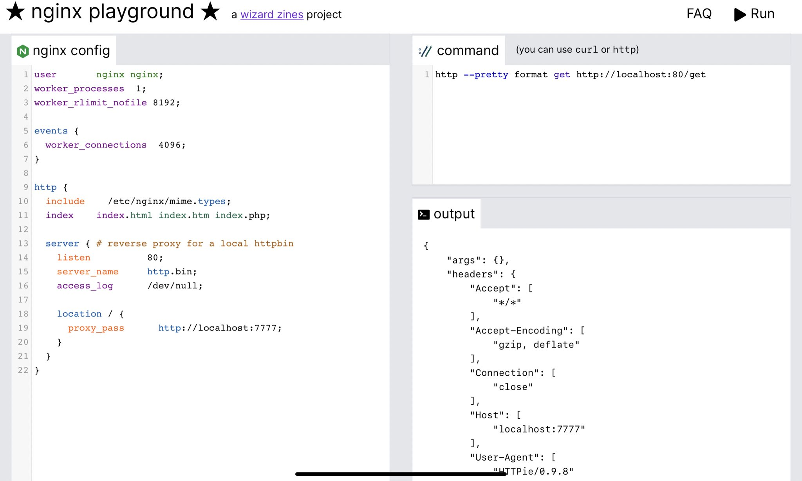

Nginx 竟然也有 playground — Go 语言构建的
大家好，我是 polarisxu。
曾几何时，playground 似乎成了新语言的标配：Go 发布就带有 https://play.golang.org/ ，Rust 发布也有 https://play.rust-lang.org/ 。你想过 Nginx 也有一个 playground 吗？你可以通过它方便的测试 Nginx 配置。
今天发现，还真有一个，地址：https://nginx-playground.wizardzines.com 。关键是，后端使用 Go 构建的。
以下是该网址的截图：

本文简单介绍下这个 playground。
01 如何使用
打开这个网站后，在左侧，你可以写 Nginx 配置，在右上角可以通过 curl 命令或 http 命令（这是 httpie）来向该 Nginx 实例发送 HTTP 请求。
然后点击右上角的“Run”，成功后，在右下角会输出：
1）如果 Nginx 启动成功，输出执行命令的结果；
2）如果 Nginx 无法启动（配置出错了），则会输出 Nginx 错误日志。
02 原理
这个网站使用的技术如下：
1）前端使用 vue.js 和 tailwind；
2）有端就一个 API endpoint，使用 Go 语言构建。它只做 1 件事，即运行 Nginx 配置。
后端的完整代码见这里：https://gist.github.com/jvns/edf78e7775fea8888685a9a2956bc477 。
当你单击“Run”时，Go 后端会执行以下操作：
- 将配置写入临时文件
- 创建一个新的网络命名空间 (
ip netns add $RANDOM_NAMESPACE_NAME) - 在端口 777 上启动 go-httpbin ，以便可以在 nginx 配置中使用它作为 backend（如上面截图中的 proxy_pass 地址）
- 启动 Nginx
- 等待 100 毫秒以确保 nginx 启动完成，如果失败则将 nginx 的错误日志返回给客户端
- 运行用户请求的命令（并确保命令以
curl或开头http） - 返回命令的输出
- 完毕
Go 后端一共 100 多行代码，逻辑处理代码 70 行左右，对实现感兴趣的可以读一下。
03 小结
这个网站的作者写了一篇文章介绍它，包括安全问题、性能问题等，有兴趣的可以查看：https://jvns.ca/blog/2021/09/24/new-tool--an-nginx-playground/ 。另外，还有一个 Nginx location match 测试的网址：https://nginx.viraptor.info/ 。
为了方便无法访问上面 Go 代码的同学，我将完整 Go 代码贴在下面：
package main
import (
"encoding/json"
"fmt"
"io/ioutil"
"log"
"math/rand"
"net/http"
"os"
"os/exec"
"strings"
"syscall"
"time"
)
type RunRequest struct {
NginxConfig string `json:"nginx_config"`
Command string `json:"command"`
}
type RunResponse struct {
Result string `json:"result"`
}
func main() {
rand.Seed(time.Now().UnixNano())
http.Handle("/", wrapLogger(Handler{runHandler}))
log.Fatal(http.ListenAndServe(":8080", nil))
}
func runHandler(w http.ResponseWriter, r *http.Request) error {
w.Header().Add("Access-Control-Allow-Origin", "*")
w.Header().Add("Access-Control-Allow-Headers", "*")
if r.Method != "POST" {
// OPTIONS request
return nil
}
body, err := ioutil.ReadAll(r.Body)
if err != nil {
return fmt.Errorf("failed to read body: %s", err)
}
var req RunRequest
json.Unmarshal([]byte(body), &req)
// write config
file, err := os.CreateTemp("/tmp", "nginx_config")
errorFile, err := os.CreateTemp("/tmp", "nginx_errors")
if err != nil {
return fmt.Errorf("failed to create temp file, %s", err)
}
file.WriteString(req.NginxConfig)
file.Close()
defer os.Remove(file.Name())
defer os.Remove(errorFile.Name())
// set up network namespace
namespace := "ns_" + randSeq(16)
if err := exec.Command("ip", "netns", "add", namespace).Run(); err != nil {
return fmt.Errorf("failed to create network namespace: %s", err)
}
defer exec.Command("ip", "netns", "delete", namespace).Run()
if err := exec.Command("ip", "netns", "exec", namespace, "ip", "link", "set", "dev", "lo", "up").Run(); err != nil {
return fmt.Errorf("failed to create network namespace: %s", err)
}
// start httpbin
httpbin_cmd := exec.Command("ip", "netns", "exec", namespace, "go-httpbin", "-port", "7777")
if err := httpbin_cmd.Start(); err != nil {
return fmt.Errorf("failed to start go-httpbin: %s", err)
}
defer kill(httpbin_cmd)
// start nginx
nginx_cmd := exec.Command("ip", "netns", "exec", namespace, "nginx", "-c", file.Name(), "-e", errorFile.Name(), "-g", "daemon off;")
if err != nil {
return fmt.Errorf("failed to get pipe: %s", err)
}
ch := make(chan error)
go func() {
ch <- nginx_cmd.Run()
}()
// Check for errors
select {
case <-ch:
logs, _ := os.ReadFile(errorFile.Name())
return fmt.Errorf("nginx failed to start. Error logs:\n\n %s", string(logs))
case <-time.After(100 * time.Millisecond):
defer term(nginx_cmd)
break
}
// run curl
curlArgs := strings.Split(strings.TrimSpace(req.Command), " ")
if curlArgs[0] != "curl" && curlArgs[0] != "http" {
return fmt.Errorf("command must start with 'curl' or 'http'")
}
curlCommand := append([]string{"netns", "exec", namespace}, curlArgs...)
output, _ := exec.Command("ip", curlCommand...).CombinedOutput()
// return response
resp := RunResponse{
Result: string(output),
}
response, err := json.Marshal(&resp)
if err != nil {
return fmt.Errorf("failed to marshal json, %s", err)
}
w.Header().Add("Content-Type", "application/json")
w.Write(response)
return nil
}
func wrapLogger(handler http.Handler) http.Handler {
return http.HandlerFunc(func(w http.ResponseWriter, r *http.Request) {
rw := &responseWrapper{w, 200}
start := time.Now()
handler.ServeHTTP(rw, r)
elapsed := time.Since(start)
log.Printf("%s %d %s %s %s", r.RemoteAddr, rw.status, r.Method, r.URL.Path, elapsed)
})
}
func term(cmd *exec.Cmd) {
if cmd.Process != nil {
cmd.Process.Signal(syscall.SIGTERM)
}
}
func kill(cmd *exec.Cmd) {
if cmd.Process != nil {
cmd.Process.Kill()
}
}
var letters = []rune("abcdefghijklmnopqrstuvwxyzABCDEFGHIJKLMNOPQRSTUVWXYZ")
func randSeq(n int) string {
b := make([]rune, n)
for i := range b {
b[i] = letters[rand.Intn(len(letters))]
}
return string(b)
}